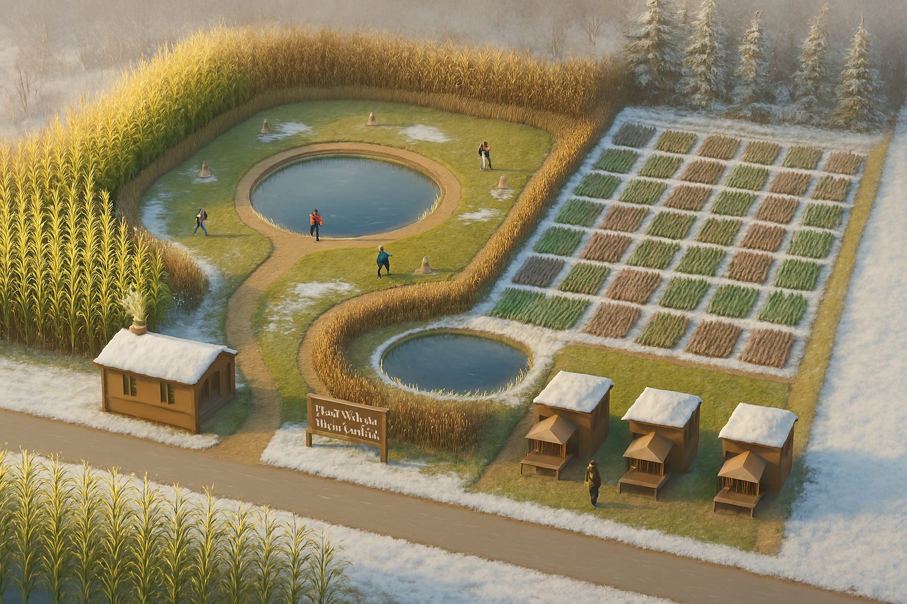
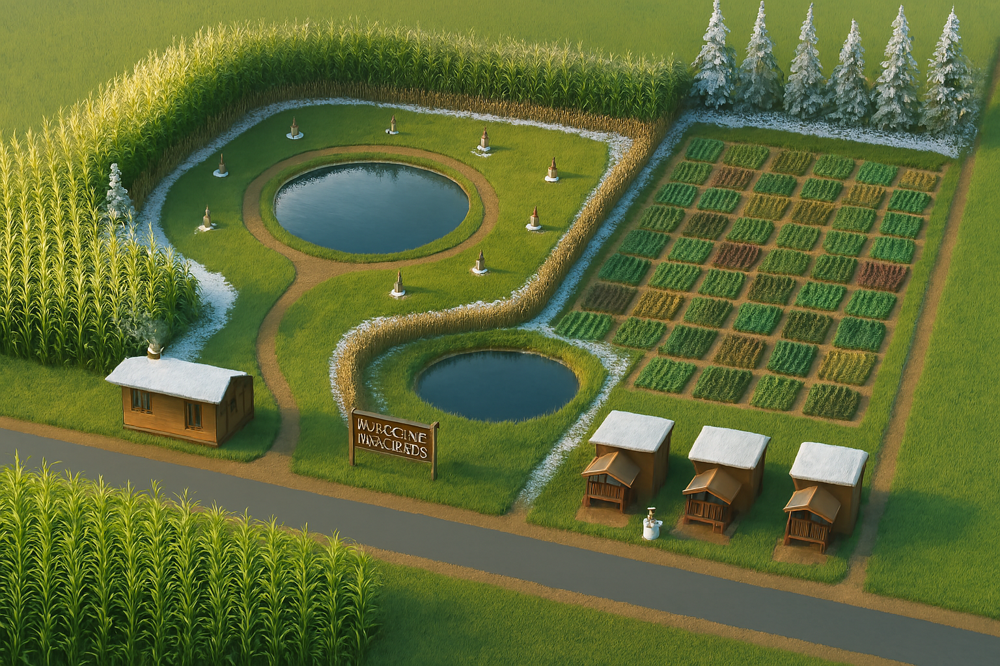
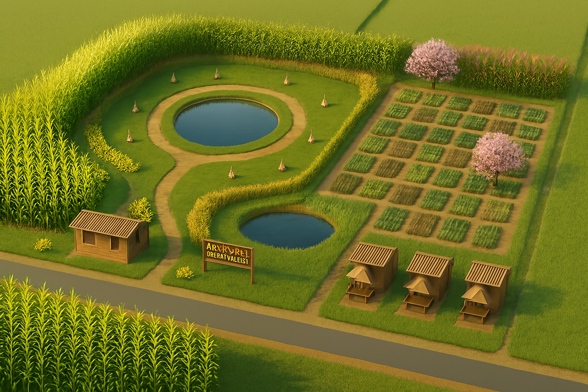
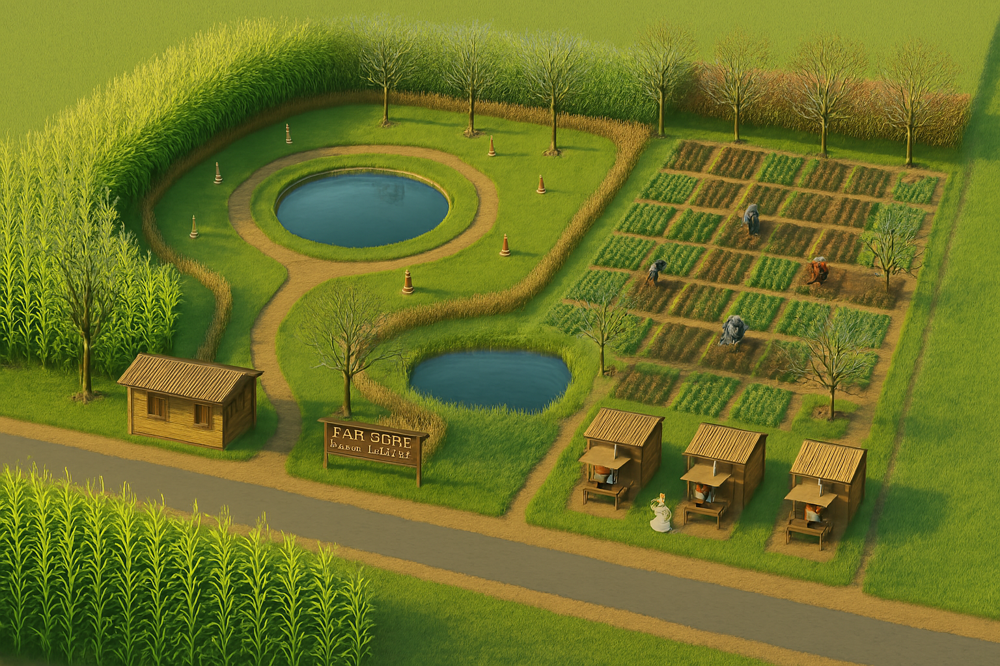
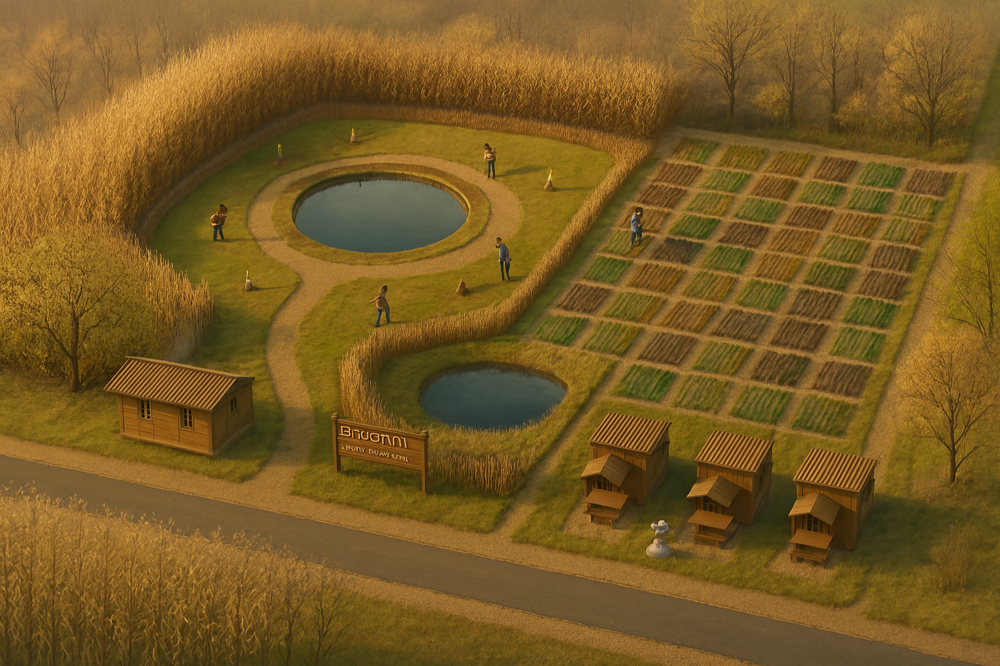
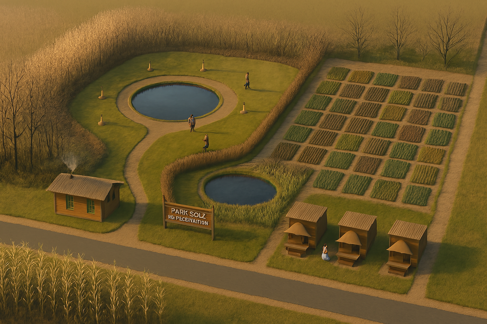

2025 파크골프 & 주말농장 사계절 카렌다
1월 (JAN)

겨울, 설원과 스케이트, 눈 덮인 풍경
2월 (FEB)

겨울 끝자락, 눈 녹는 밭, 일하는 사람들
3월 (MAR)

초봄, 밭일 시작, 옥수수 새싹
4월 (APR)

봄, 파릇파릇한 밭, 벚꽃, 신선한 초목
5월 (MAY)

봄, 농장 일손, 싱그러운 초록
6월 (JUN)

초여름, 꽃 피는 나무, 본격적 밭 관리
7월 (JUL)

여름, 활기찬 농장, 해 질 무렵의 풍경
8월 (AUG)

여름, 일하는 사람들, 완전히 녹음 짙은 풍경
9월 (SEP)

가을 시작, 작물 무르익는 모습
10월 (OCT)

가을, 단풍 든 나무, 추수 풍경
11월 (NOV)

늦가을, 농장 정리, 갈색의 논밭
12월 (DEC)

겨울, 눈 내린 풍경, 농장과 사람들